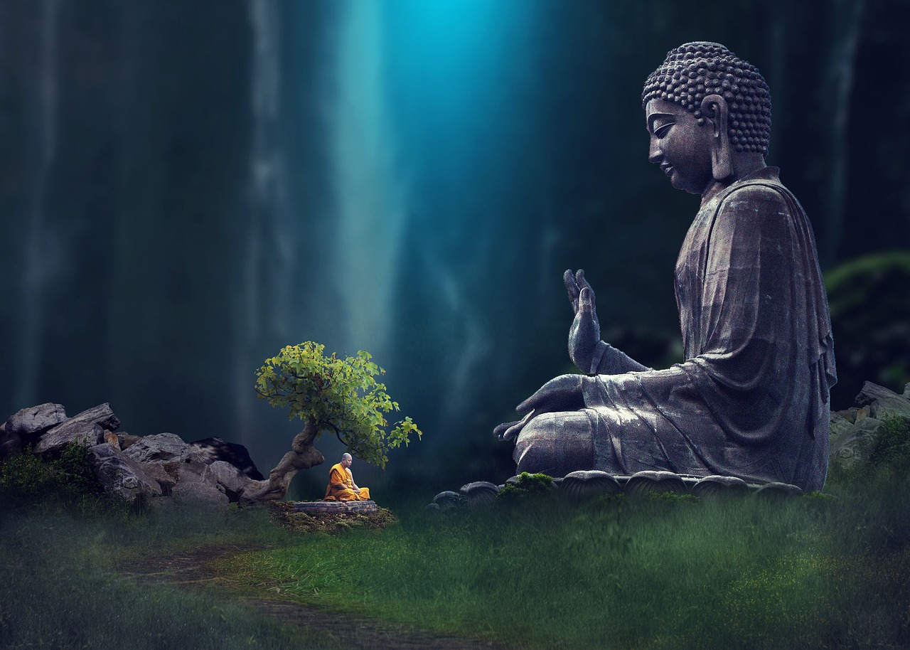

這不是神話，是被遺忘的寶藏
濟群法師 摘自：《普賢行願品的觀修原理》
在生命的某個層面，人人具有和佛菩薩同樣的品質，經中將此喻為「貧女寶藏」、「力士額珠」。一旦將蘊涵如來智慧德相的摩尼寶珠打開，我們也可以像佛菩薩那樣自在解脫，廣泛利益眾生。
或許有人會感到疑惑：既然如此，為什麼我們現有的境界和佛菩薩毫無相似之處呢？這是因為，我們固然具有佛菩薩那樣的潛質，目前卻滯留於凡夫心的層面，尚未將此寶藏打開。
事實上，很多人根本不知自家有如此寶藏尚待開發。即使聽說，也往往當作神話一笑了之，既不能直下承擔，亦無心挖掘開顯。因為我們現有的心行是如此狹隘，甚至容不下這種可能性。
作為學佛者，必須認識到生命是無盡的，而不僅是今生這幾十年。眾生雖然平等，但因業力所致，起點各不相同。有些天生聰慧，福報深厚；也有些資質駑鈍，福薄命苦。所以，我們不能只考慮現世，更要著眼未來。
人天善法的修習，正是立足於暇滿人身的獲得。得到人身，既出離了三惡道苦，更對生命發展具有重大意義。
六道中，唯有人的身份可以修行。地獄、餓鬼太痛苦、畜生太愚痴，天人則太快樂，都無法精勤道業。唯有人類處在苦樂參半的環境中，兼具抽象思維能力，能為離苦得樂而追尋真理，開發智慧。
佛陀是以人的身份修行成就的，諸佛同樣是以這一身份成就的。可見，人身是成佛之路不可或缺的護照。得到人身，有如得到一次超凡入聖的大好機會。若不善加珍惜，蹉跎一生，不知何時才能再有這樣的幸運。
所以說，認識暇滿人身的重大意義，直接關係到我們能否利用今生學好佛法。